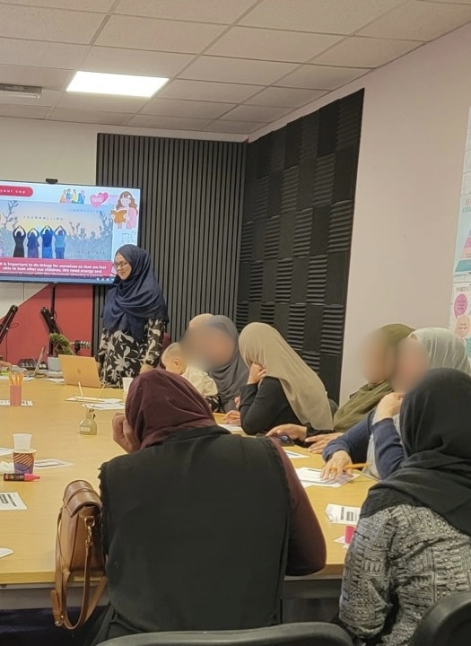

From Survival to Self™
You’re functioning. You’re coping. You’re getting things done. But somewhere in all of that, you stopped feeling like yourself.
This is not about becoming a new version of you. It is about understanding the patterns, emotions and survival responses that have been carrying you — and building the capacity to live with more choice, clarity and connection to yourself.

A structured space to understand yourself beyond coping, overthinking and simply pushing through.
You can be capable and still be exhausted from carrying yourself through everything.
Feeling safe enough to be honest changes what becomes possible.
You do not have to arrive knowing exactly what to say. The space is designed to help you feel heard, understood and able to move at a manageable pace.
Anonymous feedback shared with Sofia, paraphrased and lightly edited for clarity.
“I have been in Sofia’s spaces for over a year. I pause more before replying, protect my energy and feel more connected to my children and husband. I shout less, do more for myself and finally feel like I have people around me.”
“I had known Sofia socially for years, but seeing her in a professional space was completely different. There was no judgement, my privacy was respected and nothing changed outside the room.”
“After my diagnosis I spent months feeling isolated and unseen. Sofia made me feel heard and safe. I now look forward to the meet-ups, walks and sessions where she is involved.”
We are not trying to fix you. We are changing what you have capacity for.
The work moves from understanding your internal patterns towards having more space between what happens and how you respond.
Understand
Recognise your protective responses, patterns and what happens when your capacity is exceeded.
Process
Work with the emotional weight that continues to shape how you feel and respond.
Create space
Move away from automatic reactions and towards a greater sense of choice.
Reconnect
Explore identity beyond the roles, expectations and survival strategies you have carried.
Realign
Look at boundaries, values, needs and what actually matters to you now.
Move forward
Build practical ways of living with more capacity, confidence and self-understanding.
Your emotions aren’t the problem. Capacity is.
When there is no room left internally, even something small can feel enormous. That does not mean the emotion is wrong. It means there is more happening beneath the reaction than the reaction itself.
“Understanding always comes before change.”
From Survival to Self™ is built around understanding first — because forcing different behaviour without understanding what drives it often leaves the real pattern untouched.Not twelve weeks of motivational talking.
Each stage builds on the last. We look beneath the surface, work with what has been carried, and then turn that understanding into practical change.
Capacity, protective responses, patterns and the gap between coping and actually feeling okay.
Working with anger, sadness, fear, hurt and guilt rather than simply suppressing or managing them.
Understanding the parts of you that seem to want different things and creating greater internal alignment.
What matters to you, who you have had to be and who you are when survival is not making every decision.
Recognising needs, limits and where more conscious choice can replace automatic patterns.
Bringing the work together so understanding becomes something you can actually use beyond the programme.
A simple next step. No pressure to decide today.
There are six places per cohort so the experience stays personal and supported. Registering your interest begins a conversation. It does not commit you to joining.
Tell Sofia what you need
Complete the short enquiry form, even if you are not yet sure which kind of support fits.
Have a private conversation
Sofia will contact you to understand what is happening and whether this programme is the right next step.
Decide when you are ready
If it feels suitable, you will receive the cohort dates, format and investment before making a decision.

I care about what is underneath the behaviour, not just what everyone else can see.
My background spans science, entrepreneurship, psychology-informed learning, neurodiversity and emotional change work. But this programme was not created from theory alone.
EmpowerED Minds exists because understanding ourselves changes the questions we ask. Instead of “What is wrong with me?” we can begin to ask “What is happening here, what has this been protecting, and what do I need now?”
You do not need to become a different person.
You need enough space and capacity to hear yourself underneath everything you have been carrying.